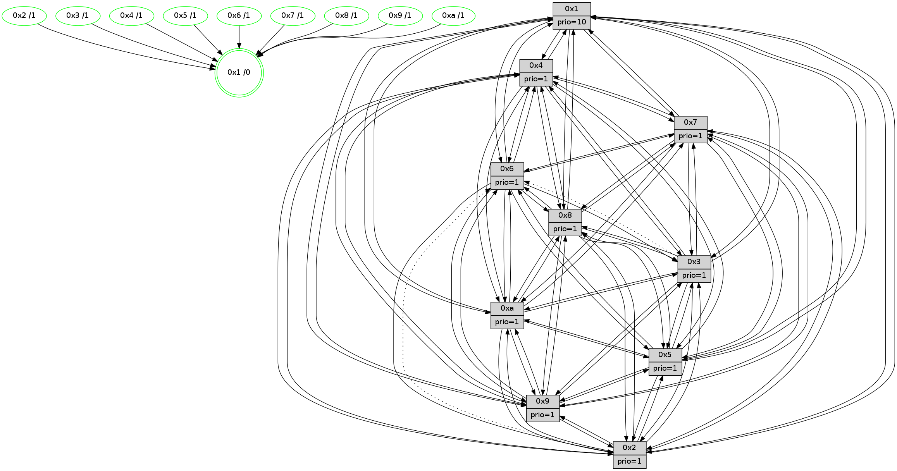

>> << IDX [start] -100 -25 -5 +0 +5 +25 +100 [1405.00143504]
 Previous packets
----------------------------------------------------------------------
1400.149188 beacon01(faad) #0 coord=01,02,03,04,05,06,07,0a,09,08 cycle=688.0ms assoc
-- color-indic=1 64 72 b6
1400.159171 beacon02(faad) #0 coord=01,02,03,04,05,06,07,0a,09,08 cycle=688.0ms assoc 64 e1 87
1400.169171 beacon03(faad) #0 coord=01,02,03,04,05,06,07,0a,09,08 cycle=688.0ms assoc 64 9b ca
1400.179173 beacon04(faad) #0 coord=01,02,03,04,05,06,07,0a,09,08 cycle=688.0ms assoc 64 ec 20
1400.189172 beacon05(faad) #0 coord=01,02,03,04,05,06,07,0a,09,08 cycle=688.0ms assoc 64 96 6d
1400.199171 beacon06(faad) #0 coord=01,02,03,04,05,06,07,0a,09,08 cycle=688.0ms assoc 64 18 ba
1400.209171 beacon07(faad) #0 coord=01,02,03,04,05,06,07,0a,09,08 cycle=688.0ms assoc 64 62 f7
1400.219176 beacon0a(faad) #0 coord=01,02,03,04,05,06,07,0a,09,08 cycle=688.0ms assoc 64 13 fc
1400.239178 beacon08(faad) #0 coord=01,02,03,04,05,06,07,0a,09,08 cycle=688.0ms assoc 64 e7 66
1400.251047 [Hello(5): seq=893 sym=7,6,4,3,1,9,8,10,2 sysInfo=hasWarning stat=7:0,9,14,0/6:2,8,12,4/4:5,1,6,15/3:7,2,8,2/1:11,3,9,0/9:4,0,15,11/8:1,7,3,4/10:3,13,3,9/2:8,2,9,7]
1400.255848 [Hello(3): seq=893 sym=1,7,2,4,8,9,10,5 asym=6 sysInfo=hasWarning stat=1:13,11,9,0/7:14,0,11,14/2:2,13,1,2/4:5,10,14,13/8:5,0,5,5/9:2,7,10,1/10:7,1,0,5/5:1,6,13,1/6:14,6,5,1]
1400.260120 [Color(10) seq=482 @0:0 prio=1]
1400.261619 [Hello(6): seq=893 sym=3,5,4,7,9,8,10,1 sysInfo=hasWarning stat=3:0,1,0,0/5:8,11,6,4/4:1,3,10,8/7:6,3,6,15/9:9,9,14,11/8:15,9,14,6/10:1,12,6,13/1:3,3,6,1]
1400.268872 [Hello(2): seq=889 sym=4,5,7,3,9,8,10,1 asym=6 sysInfo=hasWarning stat=4:10,4,7,13/5:9,15,0,3/7:9,1,10,1/3:3,4,0,0/9:15,10,7,10/8:12,0,4,12/10:9,1,5,11/1:9,1,1,0/6:12,1,6,1]
1400.272116 [Hello(1): seq=802 sym=4,2,9,5,10,3,8,6,7 sysInfo=coloring-mode-on,ColoringModeRequestCalled stat=4:4,4,10,3/2:4,8,2,5/9:4,13,4,2/5:7,0,7,9/10:5,14,5,8/3:7,4,4,11/8:3,9,4,3/6:11,0,3,1/7:4,14,11,1]
1400.274940 [STC(1) #0.240 tree-change,inconsistent-stability,stable,to-color d=0]
1400.281616 [Color(2) seq=469 @0:0 prio=1]
----------------------------------------------------------------------
1400.937319 beacon01(faad) #0 coord=01,02,03,04,05,06,07,0a,09,08 cycle=688.0ms assoc
-- color-indic=1 64 ce b3
1400.947301 beacon02(faad) #0 coord=01,02,03,04,05,06,07,0a,09,08 cycle=688.0ms assoc 64 5d 82
1400.957301 beacon03(faad) #0 coord=01,02,03,04,05,06,07,0a,09,08 cycle=688.0ms assoc 64 27 cf
1400.967302 beacon04(faad) #0 coord=01,02,03,04,05,06,07,0a,09,08 cycle=688.0ms assoc 64 50 25
1400.977302 beacon05(faad) #0 coord=01,02,03,04,05,06,07,0a,09,08 cycle=688.0ms assoc 64 2a 68
1400.987303 beacon06(faad) #0 coord=01,02,03,04,05,06,07,0a,09,08 cycle=688.0ms assoc 64 a4 bf
1400.997301 beacon07(faad) #0 coord=01,02,03,04,05,06,07,0a,09,08 cycle=688.0ms assoc 64 de f2
1401.007308 beacon0a(faad) #0 coord=01,02,03,04,05,06,07,0a,09,08 cycle=688.0ms assoc 64 af f9
1401.027307 beacon08(faad) #0 coord=01,02,03,04,05,06,07,0a,09,08 cycle=688.0ms assoc 64 5b 63
1401.038285 [STC(3)->1 #0.240 tree-change,inconsistent-stability,stable,to-color d=1]
1401.040703 [Hello(9): seq=837 sym=2,5,3,4,7,6,8,10,1 sysInfo=hasWarning stat=2:10,15,0,11/5:10,2,2,8/3:12,2,9,4/4:5,15,6,2/7:5,7,9,4/6:11,5,15,14/8:2,4,6,6/10:8,8,2,0/1:4,3,7,1]
1401.043425 [Hello(4): seq=893 sym=5,8,6,2,3,9,7,10,1 sysInfo= stat=5:12,0,9,2/8:0,2,0,0/6:5,9,15,15/2:14,9,7,1/3:3,5,0,15/9:12,13,14,2/7:10,0,1,0/10:6,7,1,14/1:12,2,7,1]
1401.046756 [Hello(7): seq=893 sym=2,3,5,6,4,8,9,10,1 sysInfo=hasWarning stat=2:9,8,6,4/3:1,15,9,3/5:15,4,12,3/6:14,11,8,12/4:1,14,9,1/8:1,3,1,0/9:8,2,9,2/10:2,14,1,7/1:8,12,4,0]
1401.050233 [STC(4)->1 #0.240 tree-change,inconsistent-stability,stable,to-color d=1]
1401.051937 [STC(7)->1 #0.240 tree-change,inconsistent-stability,stable,to-color d=1]
1401.053452 [Hello(10): seq=826 sym=6,2,3,8,7,5,9,4,1 sysInfo=hasWarning stat=6:13,12,2,4/2:9,3,5,0/3:0,2,8,15/8:13,0,2,3/7:3,7,0,9/5:3,6,14,1/9:2,7,3,1/4:8,1,12,2/1:2,2,3,1]
1401.058456 [Color(5) seq=440 @0:0 prio=1]
1401.059912 [STC(6)->1 #0.240 tree-change,inconsistent-stability,stable,to-color d=1]
1401.063344 [Hello(8): seq=837 sym=5,2,3,7,9,6,4,10,1 sysInfo=hasWarning stat=5:13,5,8,1/2:4,2,14,12/3:14,3,3,4/7:12,0,3,1/9:2,10,9,5/6:3,2,0,0/4:7,14,4,1/10:13,6,15,5/1:1,9,8,0]
1401.065786 [Color(1) seq=573 @0:0 prio=10]
1401.067555 [STC(8)->1 #0.240 tree-change,inconsistent-stability,stable,to-color d=1]
1401.070631 [STC(9)->1 #0.240 tree-change,inconsistent-stability,stable,to-color d=1]
1401.072155 [STC(10)->1 #0.240 tree-change,inconsistent-stability,stable,to-color d=1]
1401.075849 [Color(8) seq=492 @0:0 prio=1]
1401.080707 [Color(7) seq=421 @0:0 prio=1]
----------------------------------------------------------------------
1401.725450 beacon01(faad) #0 coord=01,02,03,04,05,06,07,0a,09,08 cycle=688.0ms assoc
-- color-indic=1 64 fa ab
1401.735433 beacon02(faad) #0 coord=01,02,03,04,05,06,07,0a,09,08 cycle=688.0ms assoc 64 69 9a
1401.745432 beacon03(faad) #0 coord=01,02,03,04,05,06,07,0a,09,08 cycle=688.0ms assoc 64 13 d7
1401.755433 beacon04(faad) #0 coord=01,02,03,04,05,06,07,0a,09,08 cycle=688.0ms assoc 64 64 3d
1401.765434 beacon05(faad) #0 coord=01,02,03,04,05,06,07,0a,09,08 cycle=688.0ms assoc 64 1e 70
1401.775434 beacon06(faad) #0 coord=01,02,03,04,05,06,07,0a,09,08 cycle=688.0ms assoc 64 90 a7
1401.785435 beacon07(faad) #0 coord=01,02,03,04,05,06,07,0a,09,08 cycle=688.0ms assoc 64 ea ea
1401.795439 beacon0a(faad) #0 coord=01,02,03,04,05,06,07,0a,09,08 cycle=688.0ms assoc 64 9b e1
1401.815438 beacon08(faad) #0 coord=01,02,03,04,05,06,07,0a,09,08 cycle=688.0ms assoc 64 6f 7b
1401.827963 [Hello(1): seq=803 sym=4,2,9,5,10,3,8,6,7 sysInfo=coloring-mode-on,ColoringModeRequestCalled stat=4:4,4,10,3/2:4,9,2,5/9:5,13,5,2/5:7,0,7,9/10:5,14,6,8/3:7,4,5,11/8:3,10,5,3/6:11,0,3,1/7:4,15,11,1]
1401.830681 [Color(10) seq=483 @0:0 prio=1]
1401.832142 [Hello(3): seq=894 sym=1,7,2,4,8,9,10,5 asym=6 sysInfo=hasWarning stat=1:14,11,10,0/7:15,1,12,14/2:3,14,1,2/4:6,10,15,13/8:6,1,6,5/9:3,7,11,1/10:8,1,1,5/5:2,7,14,1/6:14,6,6,1]
1401.834828 [Hello(6): seq=894 sym=3,2,5,4,7,9,8,10,1 sysInfo=hasWarning stat=3:0,1,0,0/2:0,1,0,0/5:9,11,6,4/4:1,3,10,8/7:6,4,6,15/9:9,9,15,11/8:0,10,15,6/10:1,12,7,13/1:4,3,7,1]
1401.838287 [Color(6) seq=526 @0:0 prio=1]
1401.841127 [Hello(5): seq=894 sym=7,6,4,3,1,9,8,10,2 sysInfo=hasWarning stat=7:0,10,14,0/6:3,8,13,4/4:5,1,6,15/3:7,2,9,2/1:12,3,10,0/9:5,1,0,11/8:2,8,4,4/10:3,14,4,9/2:9,3,9,7]
1401.844555 [Color(3) seq=523 @0:0 prio=1]
1401.847902 [Hello(2): seq=890 sym=4,5,7,3,9,8,10,1 asym=6 sysInfo=hasWarning stat=4:11,5,8,13/5:10,0,0,3/7:10,2,11,1/3:3,4,1,0/9:0,10,8,10/8:13,1,5,12/10:10,1,6,11/1:9,1,1,0/6:12,1,7,1]
1401.851106 [Color(2) seq=470 @0:0 prio=1]
----------------------------------------------------------------------
1402.513580 beacon01(faad) #0 coord=01,02,03,04,05,06,07,0a,09,08 cycle=688.0ms assoc
-- color-indic=1 64 46 ae
1402.523562 beacon02(faad) #0 coord=01,02,03,04,05,06,07,0a,09,08 cycle=688.0ms assoc 64 d5 9f
1402.533562 beacon03(faad) #0 coord=01,02,03,04,05,06,07,0a,09,08 cycle=688.0ms assoc 64 af d2
1402.543562 beacon04(faad) #0 coord=01,02,03,04,05,06,07,0a,09,08 cycle=688.0ms assoc 64 d8 38
1402.553563 beacon05(faad) #0 coord=01,02,03,04,05,06,07,0a,09,08 cycle=688.0ms assoc 64 a2 75
1402.563564 beacon06(faad) #0 coord=01,02,03,04,05,06,07,0a,09,08 cycle=688.0ms assoc 64 2c a2
1402.573563 beacon07(faad) #0 coord=01,02,03,04,05,06,07,0a,09,08 cycle=688.0ms assoc 64 56 ef
1402.583568 beacon0a(faad) #0 coord=01,02,03,04,05,06,07,0a,09,08 cycle=688.0ms assoc 64 27 e4
1402.603568 beacon08(faad) #0 coord=01,02,03,04,05,06,07,0a,09,08 cycle=688.0ms assoc 64 d3 7e
1402.615082 [Hello(10): seq=827 sym=6,2,3,8,7,5,9,4,1 sysInfo=hasWarning stat=6:14,13,2,4/2:10,4,5,0/3:1,3,9,15/8:13,1,2,3/7:3,8,0,9/5:4,6,14,1/9:2,7,3,1/4:8,1,12,2/1:3,2,3,1]
1402.618423 [Color(1) seq=574 @0:0 prio=10]
1402.620201 [Hello(7): seq=894 sym=2,3,5,6,4,8,9,10,1 sysInfo=hasWarning stat=2:10,9,6,4/3:2,0,10,3/5:0,4,12,3/6:15,12,8,12/4:1,14,9,1/8:1,3,1,0/9:9,2,9,2/10:2,15,1,7/1:9,12,4,0]
1402.623361 [Color(7) seq=422 @0:0 prio=1]
1402.624660 [Hello(9): seq=838 sym=2,5,3,4,7,6,8,10,1 sysInfo=hasWarning stat=2:11,0,0,11/5:11,2,2,8/3:12,3,10,4/4:5,15,6,2/7:5,8,9,4/6:11,6,15,14/8:2,5,6,6/10:8,8,3,0/1:5,3,7,1]
1402.627508 [Hello(8): seq=838 sym=5,2,3,7,9,6,4,10,1 sysInfo=hasWarning stat=5:14,5,8,1/2:5,3,14,12/3:15,4,4,4/7:12,1,3,1/9:3,10,9,5/6:4,3,0,0/4:7,14,4,1/10:13,7,15,5/1:2,10,8,0]
1402.631305 [Color(8) seq=493 @0:0 prio=1]
1402.632758 [Hello(4): seq=894 sym=5,8,6,2,3,9,7,10,1 sysInfo= stat=5:13,1,9,2/8:1,3,1,0/6:5,10,0,15/2:15,10,7,1/3:4,6,1,15/9:13,14,15,2/7:10,1,1,0/10:6,8,2,14/1:13,2,7,1]
1402.637483 [Color(4) seq=433 @0:0 prio=1]
1402.639944 [Color(5) seq=441 @0:0 prio=1]
----------------------------------------------------------------------
1403.301710 beacon01(faad) #0 coord=01,02,03,04,05,06,07,0a,09,08 cycle=688.0ms assoc
-- color-indic=1 64 82 a0
1403.311692 beacon02(faad) #0 coord=01,02,03,04,05,06,07,0a,09,08 cycle=688.0ms assoc 64 11 91
1403.321693 beacon03(faad) #0 coord=01,02,03,04,05,06,07,0a,09,08 cycle=688.0ms assoc 64 6b dc
1403.331693 beacon04(faad) #0 coord=01,02,03,04,05,06,07,0a,09,08 cycle=688.0ms assoc 64 1c 36
1403.341693 beacon05(faad) #0 coord=01,02,03,04,05,06,07,0a,09,08 cycle=688.0ms assoc 64 66 7b
1403.351693 beacon06(faad) #0 coord=01,02,03,04,05,06,07,0a,09,08 cycle=688.0ms assoc 64 e8 ac
1403.361694 beacon07(faad) #0 coord=01,02,03,04,05,06,07,0a,09,08 cycle=688.0ms assoc 64 92 e1
1403.371701 beacon0a(faad) #0 coord=01,02,03,04,05,06,07,0a,09,08 cycle=688.0ms assoc 64 e3 ea
1403.391698 beacon08(faad) #0 coord=01,02,03,04,05,06,07,0a,09,08 cycle=688.0ms assoc 64 17 70
1403.403565 [Hello(5): seq=895 sym=7,6,4,3,1,9,8,10,2 sysInfo=hasWarning stat=7:0,10,14,0/6:3,8,13,4/4:5,1,6,15/3:7,3,9,2/1:12,3,10,0/9:5,1,0,11/8:2,8,4,4/10:4,14,4,9/2:10,4,9,7]
1403.406278 [Hello(1): seq=804 sym=4,2,9,5,10,3,8,6,7 sysInfo=coloring-mode-on,ColoringModeRequestCalled stat=4:5,5,10,3/2:5,10,2,5/9:6,13,5,2/5:8,1,7,9/10:6,15,6,8/3:8,5,5,11/8:4,11,5,3/6:12,1,3,1/7:5,0,11,1]
1403.409004 [Color(9) seq=454 @0:0 prio=1]
1403.410918 [Hello(3): seq=895 sym=1,7,2,4,8,9,10,5 asym=6 sysInfo=hasWarning stat=1:15,12,10,0/7:0,2,12,14/2:4,15,1,2/4:7,11,15,13/8:7,2,6,5/9:4,7,11,1/10:9,2,1,5/5:2,8,14,1/6:14,6,6,1]
1403.413801 [Color(3) seq=524 @0:0 prio=1]
1403.415351 [Hello(6): seq=895 sym=3,2,5,4,7,9,8,10,1 sysInfo=hasWarning stat=3:0,2,0,0/2:1,2,0,0/5:10,12,6,4/4:2,4,10,8/7:7,5,6,15/9:10,9,15,11/8:1,11,15,6/10:2,13,7,13/1:5,4,7,1]
1403.419469 [Color(6) seq=527 @0:0 prio=1]
1403.421741 [Color(10) seq=484 @0:0 prio=1]
1403.426174 [Hello(2): seq=891 sym=4,5,7,3,9,8,10,1 asym=6 sysInfo=hasWarning stat=4:12,6,8,13/5:10,1,0,3/7:11,3,11,1/3:3,4,1,0/9:1,10,8,10/8:14,2,5,12/10:11,2,6,11/1:10,2,1,0/6:12,1,7,1]
1403.431312 [Color(2) seq=471 @0:0 prio=1]
----------------------------------------------------------------------
1404.089842 beacon01(faad) #0 coord=01,02,03,04,05,06,07,0a,09,08 cycle=688.0ms assoc
-- color-indic=1 64 3e a5
1404.099826 beacon02(faad) #0 coord=01,02,03,04,05,06,07,0a,09,08 cycle=688.0ms assoc 64 ad 94
1404.109827 beacon03(faad) #0 coord=01,02,03,04,05,06,07,0a,09,08 cycle=688.0ms assoc 64 d7 d9
1404.119836 beacon04(faad) #0 coord=01,02,03,04,05,06,07,0a,09,08 cycle=688.0ms assoc 64 a0 33
1404.129824 beacon05(faad) #0 coord=01,02,03,04,05,06,07,0a,09,08 cycle=688.0ms assoc 64 da 7e
1404.139824 beacon06(faad) #0 coord=01,02,03,04,05,06,07,0a,09,08 cycle=688.0ms assoc 64 54 a9
1404.149825 beacon07(faad) #0 coord=01,02,03,04,05,06,07,0a,09,08 cycle=688.0ms assoc 64 2e e4
1404.159830 beacon0a(faad) #0 coord=01,02,03,04,05,06,07,0a,09,08 cycle=688.0ms assoc 64 5f ef
1404.179829 beacon08(faad) #0 coord=01,02,03,04,05,06,07,0a,09,08 cycle=688.0ms assoc 64 ab 75
1404.191372 [Hello(10): seq=828 sym=6,2,3,8,7,5,9,4,1 sysInfo=hasWarning stat=6:14,13,2,4/2:11,5,5,0/3:1,3,9,15/8:14,2,2,3/7:4,9,0,9/5:5,7,14,1/9:3,7,3,1/4:9,2,12,2/1:4,3,3,1]
1404.195335 [Color(5) seq=442 @0:0 prio=1]
1404.197082 [Hello(8): seq=839 sym=5,2,3,7,9,6,4,10,1 sysInfo=hasWarning stat=5:15,6,8,1/2:6,4,14,12/3:0,5,4,4/7:12,1,3,1/9:3,11,9,5/6:5,4,0,0/4:8,15,4,1/10:14,8,15,5/1:3,11,8,0]
1404.200408 [Hello(7): seq=895 sym=2,3,5,6,4,8,9,10,1 sysInfo=hasWarning stat=2:11,10,6,4/3:3,1,10,3/5:1,5,12,3/6:0,13,8,12/4:2,15,9,1/8:2,4,1,0/9:10,3,9,2/10:3,0,1,7/1:10,13,4,0]
1404.204444 [Hello(9): seq=839 sym=2,5,3,4,7,6,8,10,1 sysInfo=hasWarning stat=2:12,1,0,11/5:12,3,2,8/3:13,4,10,4/4:6,0,6,2/7:5,8,9,4/6:12,7,15,14/8:3,6,6,6/10:8,9,3,0/1:6,3,7,1]
1404.208228 [Hello(4): seq=895 sym=5,8,6,2,3,9,7,10,1 sysInfo= stat=5:14,2,9,2/8:1,3,1,0/6:6,11,0,15/2:0,11,7,1/3:5,7,1,15/9:13,15,15,2/7:10,1,1,0/10:7,9,2,14/1:14,3,7,1]
1404.211066 [Color(4) seq=434 @0:0 prio=1]
1404.213968 [Color(8) seq=494 @0:0 prio=1]
1404.215346 [Color(7) seq=423 @0:0 prio=1]
----------------------------------------------------------------------
1404.877974 beacon01(faad) #0 coord=01,02,03,04,05,06,07,0a,09,08 cycle=688.0ms assoc
-- color-indic=1 64 ea 90
1404.887957 beacon02(faad) #0 coord=01,02,03,04,05,06,07,0a,09,08 cycle=688.0ms assoc 64 79 a1
1404.897956 beacon03(faad) #0 coord=01,02,03,04,05,06,07,0a,09,08 cycle=688.0ms assoc 64 03 ec
1404.907957 beacon04(faad) #0 coord=01,02,03,04,05,06,07,0a,09,08 cycle=688.0ms assoc 64 74 06
1404.917959 beacon05(faad) #0 coord=01,02,03,04,05,06,07,0a,09,08 cycle=688.0ms assoc 64 0e 4b
1404.927958 beacon06(faad) #0 coord=01,02,03,04,05,06,07,0a,09,08 cycle=688.0ms assoc 64 80 9c
1404.937958 beacon07(faad) #0 coord=01,02,03,04,05,06,07,0a,09,08 cycle=688.0ms assoc 64 fa d1
1404.947961 beacon0a(faad) #0 coord=01,02,03,04,05,06,07,0a,09,08 cycle=688.0ms assoc 64 8b da
1404.967963 beacon08(faad) #0 coord=01,02,03,04,05,06,07,0a,09,08 cycle=688.0ms assoc 64 7f 40
1404.980187 [Hello(1): seq=805 sym=4,2,9,5,10,3,8,6,7 sysInfo=coloring-mode-on,ColoringModeRequestCalled stat=4:6,6,10,3/2:6,11,2,5/9:7,14,5,2/5:8,1,7,9/10:7,0,6,8/3:9,6,5,11/8:4,12,5,3/6:13,2,3,1/7:5,1,11,1]
1404.983435 [Color(9) seq=455 @0:0 prio=1]
1404.984964 [Color(10) seq=485 @0:0 prio=1]
1404.986490 PARSE ERROR************************
Traceback (most recent call last):
File "PacketAnalysis.py", line 167, in showOperaPacket
structPacket = OperaPacketParse.parsePacket(rawPacket)
File "../../pkg-python/HipSens/Core/OperaPacketParse.py", line 461, in parsePacket
return parseHelloMessage(data)
File "../../pkg-python/HipSens/Core/OperaPacketParse.py", line 109, in parseHelloMessage
sysInfo,stability,colorInfo = struct.unpack("!HBB", linkList[0:4])
error: unpack requires a string argument of length 4
48 34 03 00 03 80 00 02 02 12 01 00 07 00 06 00 02 00 04 00 08 00 09 00 0a 00 05 00 53 04 00 02 00 00 4c 12 0b d0 ec 30 16 7f 21 05 df c8 56 37 1b 75 51 3a 1e 93 53 b9
1404.989040 [Hello(5): seq=896 sym=7,6,4,3,1,9,8,10,2 sysInfo=hasWarning stat=7:1,11,14,0/6:4,9,13,4/4:6,2,6,15/3:8,4,9,2/1:13,3,10,0/9:6,2,0,11/8:3,9,4,4/10:5,15,4,9/2:11,5,9,7]
1404.993461 [Hello(6): seq=896 sym=3,2,5,4,7,9,8,10,1 sysInfo=hasWarning stat=3:0,2,0,0/2:2,3,0,0/5:11,13,6,4/4:3,5,10,8/7:8,6,6,15/9:11,9,15,11/8:2,12,15,6/10:3,14,7,13/1:6,4,7,1]
1404.998590 [Hello(2): seq=892 sym=4,5,7,3,9,8,10,1 asym=6 sysInfo=hasWarning stat=4:13,7,8,13/5:11,2,0,3/7:12,4,11,1/3:3,4,1,0/9:2,10,8,10/8:14,3,5,12/10:12,2,6,11/1:11,2,2,0/6:12,1,7,1]